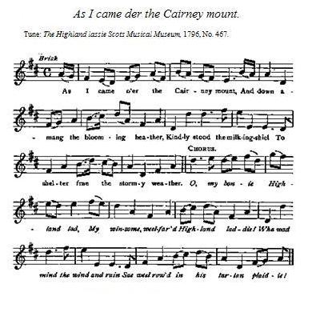

As I came o'er the Cairney mount
Les hauteurs de Cairney
by Robert Burns
Tune - Mélodie"As I came o'er the Cairney mount"
from Johnson's "Scots Musical Museum" , 1796, N°467
Sequenced by Christian Souchon

|
To the tune:
"The fragment is a much revised version of an old song of four stanzas in the "Merry Muses". The tune was first printed as "The Highland lassie" in Oswald's Curious Collection of Scots Tunes, 1740,37; it is in Caledonian Pocket Companion, 1743, i. 12; in McGibbon's Scots Tunes, 1742, 13 it is entitled "The Highland laddie" , one of the numerons tunes of the name . The editor of the Museum copied the music from Aird's Airs, I'll. No. 164 as Burns directed on his manuscript." Source: "Complete Songs of Robert Burns Online Book" (Cf. Liens). |
A propos de la mélodie:
"Ce fragment est une version revue et corrigée d'un vieux chant de quatre strophes tiré du recueil, les "Muses joyeuses". La mélodie fut imprimée pour la première fois sous le titre " "La fille des Highlands" dans l'ouvrage d'Oswald, "Curieuse collection d'airs écossais", 1740, N°37. On le trouve aussi, dans le "Vadémécum du Calédonien", 1743, vol.1, N°12, dans les "Mélodies écossaises" de McGibbon, 1742, N°13. où il porte le titre de " Highland Laddie" , comme de nombreux autres chants . L'éditeur du "Musée", quant à lui, a tiré sa version des "Airs" d'Aird, vol II, N°164, comme Burns l'en priait dans son manuscrit." Source: "Complete Songs of Robert Burns Online Book" (Cf. Liens). |

|
AS I CAME O'ER THE CAIRNEY MOUNT
1. As I came o'er the Cairney mount, And down amang the blooming heather. Kindly stood the milking-shiel To shelter frae the stormy weather. Chorus. O, my borne Highland lad, My winsome, weel-faurd Highland laddie! I wha wad mind the wind and rain Sae weel rowd in his tartan plaidie! 2. Now Phoebus blinkit on the bent, And o'er the knowes the lambs were bleating; But he wan my heart's consent To be his ain at the neist meeting. O, my borne Highland lad... Source: "Scots Musical Museum", 1796, No. 467, signed 'Z.' Centenary Burns, 1897, vol. iyz. The MS. is in the British Museum. (Complete Songs of Robert Burns Online Book) |
UNE FOIS QUE J'EUS FRANCHI LES HAUTEURS DE CAIRNEY
1. Une fois que j'eus franchi les hauteurs de Cairney, Parmi la bruyère en fleur, dévalé l'alpage, J'ai vu le buron à lait M'inviter à m'abriter de l'orage. Refrain Ton plaid de tartan, O garçon séduisant, O toi que les Hautes Terres ont vu naître, Contre la pluie et le vent, Pour me prémunir, laisse-moi m'y mettre! 2. A présent Phébus sur la lande brille à nouveau, Les agneaux sur les monts en bêlant me réclament. Je n'irai pas de sitôt, Je vais me donner à lui corps et âme. Ton plaid de tartan, ... (Trad. Christian Souchon(c)2010) |
|
In the "Interleaved Museum" the note of Burns is: ' The first and indeed the most beautiful set of this tune was formerly, and in some places is still, known by the name of "As I cam o'er the Cairney mount", which is the first line of an excellent but somewhat licentious song still sung to the tune.'
This is the whole of the note written by Burns which Cromek has expanded and garbled in "Reliques", 1808, pp. 207 and 208. Source: "Complete Songs of Robert Burns Online Book" (Cf. Liens). |
Dans l'"exemplaire interfolié du Musée", une note de Burns indique: "La première, et aussi la plus belle, version de cette mélodie était connue autrefois, et l'est encore ici et là, sous le titre " En franchissant les monts de Cairney", qui est la première ligne du chant excellent, bien que quelque peu licencieux, auquel elle sert de support."
Voilà tout ce que contient la note rédigée de la main de Burns, que Cromek dans ses "Reliques de Nithsdale", 1808 a délayée et dénaturée à loisir, pages 207 et 208. Source: "Complete Songs of Robert Burns Online Book" (Cf. Liens). |
|
|
|
|
The authors of the "Complete Songs of Robert Burns Online Book" have classified this song as a "Jacobite song", though the lyrics don't contain a single subversive word. But they sound very much like a bawdy song "emasculated" by Burns, in the same way as
"Duncan Davison"
, for instance. Even if the present song specifies "my borne Highland laddie", We may assume, on trust, a disguised ditty on Charlie, who is the "Bonnie Highland laddie" of so many a song, .
All the more so, since a very similar tune accompanies a blatantly Jacobite song,
"Bessie's Haggies"
.
|
Les auteurs du livre en ligne "Œuvres poétiques complètes de Burns" ont rangé ce chant, parmi les chants Jacobites sans raison apparente. Le texte a tout au plus un arrière goût de chanson paillarde "émasculée" par Burns, comme il l'a fait pour
"Duncan Davison"
, par exemple. On supposera donc, en se fiant au flair de ces auteurs, qu'il s'agit d'un chant déguisé visant Charlie, qui est le "Beau gars des Hautes Terres" de nombreux chants, même si, en l'occurrence, on précise "né dans les Highlands". D'autant qu'une mélodie très proche accompagne une autre chanson où le Jacobitisme ne se cache pas:
"Les Haggies de Bessie"
.
|
|
|
|